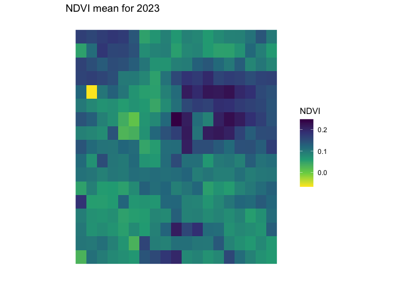
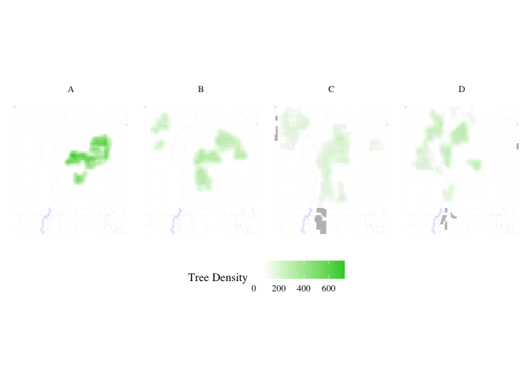
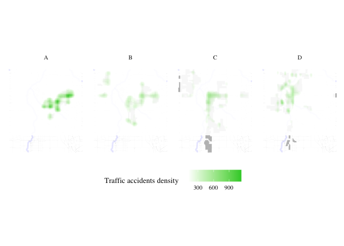
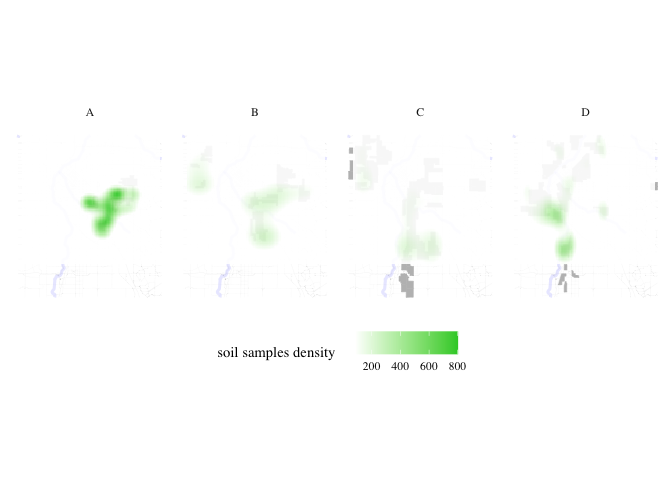

Redlining
if (!requireNamespace("tidytext", quietly = TRUE)) {
install.packages("tidytext")
}
library(tidytext)
## Warning: package 'tidytext' was built under R version 4.3.2
library(sf)
## Warning: package 'sf' was built under R version 4.3.2
## Linking to GEOS 3.11.0, GDAL 3.5.3, PROJ 9.1.0; sf_use_s2() is TRUE
library(ggplot2)
## Warning: package 'ggplot2' was built under R version 4.3.2
library(ggthemes)
## Warning: package 'ggthemes' was built under R version 4.3.2
library(dplyr)
##
## Attaching package: 'dplyr'
## The following objects are masked from 'package:stats':
##
## filter, lag
## The following objects are masked from 'package:base':
##
## intersect, setdiff, setequal, union
library(rstac)
## Warning: package 'rstac' was built under R version 4.3.2
library(gdalcubes)
## Warning: package 'gdalcubes' was built under R version 4.3.2
library(gdalUtils)
## Please note that rgdal will be retired during October 2023,
## plan transition to sf/stars/terra functions using GDAL and PROJ
## at your earliest convenience.
## See https://r-spatial.org/r/2023/05/15/evolution4.html and https://github.com/r-spatial/evolution
## rgdal: version: 1.6-7, (SVN revision 1203)
## Geospatial Data Abstraction Library extensions to R successfully loaded
## Loaded GDAL runtime: GDAL 3.5.3, released 2022/10/21
## Path to GDAL shared files: /Library/Frameworks/R.framework/Versions/4.3-x86_64/Resources/library/rgdal/gdal
## GDAL does not use iconv for recoding strings.
## GDAL binary built with GEOS: TRUE
## Loaded PROJ runtime: Rel. 9.1.0, September 1st, 2022, [PJ_VERSION: 910]
## Path to PROJ shared files: /Library/Frameworks/R.framework/Versions/4.3-x86_64/Resources/library/gdalcubes/proj
## PROJ CDN enabled: FALSE
## Linking to sp version:1.6-1
## To mute warnings of possible GDAL/OSR exportToProj4() degradation,
## use options("rgdal_show_exportToProj4_warnings"="none") before loading sp or rgdal.
##
## Attaching package: 'gdalUtils'
## The following object is masked from 'package:sf':
##
## gdal_rasterize
library(gdalcubes)
library(colorspace)
library(terra)
## Warning: package 'terra' was built under R version 4.3.2
## terra 1.7.71
##
## Attaching package: 'terra'
## The following object is masked from 'package:colorspace':
##
## RGB
## The following objects are masked from 'package:gdalcubes':
##
## animate, crop, size
library(tidyterra)
##
## Attaching package: 'tidyterra'
## The following object is masked from 'package:stats':
##
## filter
library(basemapR)
library(tidytext)
library(ggwordcloud)
library(osmextract)
## Data (c) OpenStreetMap contributors, ODbL 1.0. https://www.openstreetmap.org/copyright.
## Check the package website, https://docs.ropensci.org/osmextract/, for more details.
library(sf)
library(ggplot2)
library(ggthemes)
library(glue)
##
## Attaching package: 'glue'
## The following object is masked from 'package:terra':
##
## trim
library(purrr)
# Function to get a list of unique cities and states from the redlining data
get_city_state_list_from_redlining_data <- function() {
# URL to the GeoJSON data
url <- "https://raw.githubusercontent.com/americanpanorama/mapping-inequality-census-crosswalk/main/MIv3Areas_2010TractCrosswalk.geojson"
# Read the GeoJSON file into an sf object
redlining_data <- tryCatch({
read_sf(url)
}, error = function(e) {
stop("Error reading GeoJSON data: ", e$message)
})
# Check for the existence of 'city' and 'state' columns
if (!all(c("city", "state") %in% names(redlining_data))) {
stop("The required columns 'city' and/or 'state' do not exist in the data.")
}
# Extract a unique list of city and state pairs without the geometries
city_state_df <- redlining_data %>%
select(city, state) %>%
st_set_geometry(NULL) %>% # Drop the geometry to avoid issues with invalid shapes
distinct(city, state) %>%
arrange(state, city ) # Arrange the list alphabetically by state, then by city
# Return the dataframe of unique city-state pairs
return(city_state_df)
}
#Retrieve the list of cities and states
city_state_list <- get_city_state_list_from_redlining_data()
print(city_state_list)
# A tibble: 314 × 2
city state
<chr> <chr>
1 Birmingham AL
2 Mobile AL
3 Montgomery AL
4 Arkadelphia AR
5 Batesville AR
6 Camden AR
7 Conway AR
8 El Dorado AR
9 Fort Smith AR
10 Little Rock AR
# ℹ 304 more rows
# Function to load and filter redlining data by city
load_city_redlining_data <- function(city_name) {
# URL to the GeoJSON data
url <- "https://raw.githubusercontent.com/americanpanorama/mapping-inequality-census-crosswalk/main/MIv3Areas_2010TractCrosswalk.geojson"
# Read the GeoJSON file into an sf object
redlining_data <- read_sf(url)
# Filter the data for the specified city and non-empty grades
city_redline <- redlining_data %>%
filter(city == city_name )
# Return the filtered data
return(city_redline)
}
# Load redlining data for Denver
denver_redlining <- load_city_redlining_data("Denver")
print(denver_redlining)
Simple feature collection with 316 features and 15 fields
Geometry type: MULTIPOLYGON
Dimension: XY
Bounding box: xmin: -105.0622 ymin: 39.62952 xmax: -104.8763 ymax: 39.79111
Geodetic CRS: WGS 84
# A tibble: 316 × 16
area_id city state city_survey cat grade label res com ind fill
* <int> <chr> <chr> <lgl> <chr> <chr> <chr> <lgl> <lgl> <lgl> <chr>
1 6525 Denver CO TRUE Best A A1 TRUE FALSE FALSE #76a865
2 6525 Denver CO TRUE Best A A1 TRUE FALSE FALSE #76a865
3 6525 Denver CO TRUE Best A A1 TRUE FALSE FALSE #76a865
4 6525 Denver CO TRUE Best A A1 TRUE FALSE FALSE #76a865
5 6529 Denver CO TRUE Best A A2 TRUE FALSE FALSE #76a865
6 6529 Denver CO TRUE Best A A2 TRUE FALSE FALSE #76a865
7 6529 Denver CO TRUE Best A A2 TRUE FALSE FALSE #76a865
8 6537 Denver CO TRUE Best A A3 TRUE FALSE FALSE #76a865
9 6537 Denver CO TRUE Best A A3 TRUE FALSE FALSE #76a865
10 6537 Denver CO TRUE Best A A3 TRUE FALSE FALSE #76a865
# ℹ 306 more rows
# ℹ 5 more variables: GEOID10 <chr>, GISJOIN <chr>, calc_area <dbl>,
# pct_tract <dbl>, geometry <MULTIPOLYGON [°]>
get_places <- function(polygon_layer, type = "food" ) {
# Check if the input is an sf object
if (!inherits(polygon_layer, "sf")) {
stop("The provided object is not an sf object.")
}
# Create a bounding box from the input sf object
bbox_here <- st_bbox(polygon_layer) |>
st_as_sfc()
if(type == "food"){
my_layer <- "multipolygons"
my_query <- "SELECT * FROM multipolygons WHERE (
shop IN ('supermarket', 'bodega', 'market', 'other_market', 'farm', 'garden_centre', 'doityourself', 'farm_supply', 'compost', 'mulch', 'fertilizer') OR
amenity IN ('social_facility', 'market', 'restaurant', 'coffee') OR
leisure = 'garden' OR
landuse IN ('farm', 'farmland', 'row_crops', 'orchard_plantation', 'dairy_grazing') OR
building IN ('brewery', 'winery', 'distillery') OR
shop = 'greengrocer' OR
amenity = 'marketplace'
)"
title <- "food"
}
if (type == "processed_food") {
my_layer <- "multipolygons"
my_query <- "SELECT * FROM multipolygons WHERE (
amenity IN ('fast_food', 'cafe', 'pub') OR
shop IN ('convenience', 'supermarket') OR
shop = 'kiosk'
)"
title <- "Processed Food Locations"
}
if(type == "natural_habitats"){
my_layer <- "multipolygons"
my_query <- "SELECT * FROM multipolygons WHERE (
boundary = 'protected_area' OR
natural IN ('tree', 'wood') OR
landuse = 'forest' OR
leisure = 'park'
)"
title <- "Natural habitats or City owned trees"
}
if(type == "roads"){
my_layer <- "lines"
my_query <- "SELECT * FROM lines WHERE (
highway IN ('motorway', 'trunk', 'primary', 'secondary', 'tertiary') )"
title <- "Major roads"
}
if(type == "rivers"){
my_layer <- "lines"
my_query <- "SELECT * FROM lines WHERE (
waterway IN ('river'))"
title <- "Major rivers"
}
if(type == "internet_access") {
my_layer <- "multipolygons"
my_query <- "SELECT * FROM multipolygons WHERE (
amenity IN ('library', 'cafe', 'community_centre', 'public_building') AND
internet_access = 'yes'
)"
title <- "Internet Access Locations"
}
if(type == "water_bodies") {
my_layer <- "multipolygons"
my_query <- "SELECT * FROM multipolygons WHERE (
natural IN ('water', 'lake', 'pond') OR
water IN ('lake', 'pond') OR
landuse = 'reservoir'
)"
title <- "Water Bodies"
}
if(type == "government_buildings") {
my_layer <- "multipolygons"
my_query <- "SELECT * FROM multipolygons WHERE (
amenity IN ('townhall', 'courthouse', 'embassy', 'police', 'fire_station') OR
building IN ('capitol', 'government')
)"
title <- "Government Buildings"
}
# Use the bbox to get data with oe_get(), specifying the desired layer and a custom SQL query for fresh food places
tryCatch({
places <- oe_get(
place = bbox_here,
layer = my_layer, # Adjusted layer; change as per actual data availability
query = my_query,
quiet = TRUE
)
places <- st_make_valid(places)
# Crop the data to the bounding box
cropped_places <- st_crop(places, bbox_here)
# Plotting the cropped fresh food places
plot <- ggplot(data = cropped_places) +
geom_sf(fill="cornflowerblue", color="cornflowerblue") +
ggtitle(title) +
theme_tufte()+
theme(legend.position = "none", # Optionally hide the legend
axis.text = element_blank(), # Remove axis text
axis.title = element_blank(), # Remove axis titles
axis.ticks = element_blank(), # Remove axis ticks
plot.background = element_rect(fill = "white", color = NA), # Set the plot background to white
panel.background = element_rect(fill = "white", color = NA), # Set the panel background to white
panel.grid.major = element_blank(), # Remove major grid lines
panel.grid.minor = element_blank(),
)
# Save the plot as a PNG file
png_filename <- paste0(title,"_", Sys.Date(), ".png")
ggsave(png_filename, plot, width = 10, height = 8, units = "in")
# Return the cropped dataset
return(cropped_places)
}, error = function(e) {
stop("Failed to retrieve or plot data: ", e$message)
})
}
plot_city_redlining <- function(redlining_data, filename = "redlining_plot.png") {
# Fetch additional geographic data based on redlining data
roads <- get_places(redlining_data, type = "roads")
rivers <- get_places(redlining_data, type = "rivers")
# Filter residential zones with valid grades and where city survey is TRUE
residential_zones <- redlining_data %>%
filter(city_survey == TRUE & grade != "")
# Colors for the grades
colors <- c("#76a865", "#7cb5bd", "#ffff00", "#d9838d")
# Plot the data using ggplot2
plot <- ggplot() +
geom_sf(data = roads, lwd = 0.1) +
geom_sf(data = rivers, color = "blue", alpha = 0.5, lwd = 1.1) +
geom_sf(data = residential_zones, aes(fill = grade), alpha = 0.5) +
theme_tufte() +
scale_fill_manual(values = colors) +
labs(fill = 'HOLC Categories') +
theme(
plot.background = element_rect(fill = "white", color = NA),
panel.background = element_rect(fill = "white", color = NA),
panel.grid.major = element_blank(),
panel.grid.minor = element_blank(),
legend.position = "right"
)
# Save the plot as a high-resolution PNG file
ggsave(filename, plot, width = 10, height = 8, units = "in", dpi = 600)
# Return the plot object if needed for further manipulation or checking
return(plot)
}
denver_plot <- plot_city_redlining(denver_redlining)
print(denver_plot)

food <- get_places(denver_redlining, type="food")
food_processed <- get_places(denver_redlining, type="processed_food")
natural_habitats <- get_places(denver_redlining, type="natural_habitats")
roads <- get_places(denver_redlining, type="roads")
rivers <- get_places(denver_redlining, type="rivers")
#water_bodies <- get_places(denver_redlining, type="water_bodies")
government_buildings <- get_places(denver_redlining, type="government_buildings")
split_plot <- function(sf_data, roads, rivers) {
# Filter for grades A, B, C, and D
sf_data_filtered <- sf_data %>%
filter(grade %in% c('A', 'B', 'C', 'D'))
# Define a color for each grade
grade_colors <- c("A" = "#76a865", "B" = "#7cb5bd", "C" = "#ffff00", "D" = "#d9838d")
# Create the plot with panels for each grade
plot <- ggplot(data = sf_data_filtered) +
geom_sf(data = roads, alpha = 0.1, lwd = 0.1) +
geom_sf(data = rivers, color = "blue", alpha = 0.1, lwd = 1.1) +
geom_sf(aes(fill = grade)) +
facet_wrap(~ grade, nrow = 1) + # Free scales for different zoom levels if needed
scale_fill_manual(values = grade_colors) +
theme_minimal() +
labs(fill = 'HOLC Grade') +
theme_tufte() +
theme(plot.background = element_rect(fill = "white", color = NA),
panel.background = element_rect(fill = "white", color = NA),
legend.position = "none", # Optionally hide the legend
axis.text = element_blank(), # Remove axis text
axis.title = element_blank(), # Remove axis titles
axis.ticks = element_blank(), # Remove axis ticks
panel.grid.major = element_blank(), # Remove major grid lines
panel.grid.minor = element_blank())
return(plot)
}
plot_row <- split_plot(denver_redlining, roads, rivers)
print(plot_row)

process_and_plot_sf_layers <- function(layer1, layer2, output_file = "output_plot.png") {
# Make geometries valid
layer1 <- st_make_valid(layer1)
layer2 <- st_make_valid(layer2)
# Optionally, simplify geometries to remove duplicate vertices
layer1 <- st_simplify(layer1, preserveTopology = TRUE) |>
filter(grade != "")
# Prepare a list to store results
results <- list()
# Loop through each grade and perform operations
for (grade in c("A", "B", "C", "D")) {
# Filter layer1 for current grade
layer1_grade <- layer1[layer1$grade == grade, ]
# Buffer the geometries of the current grade
buffered_layer1_grade <- st_buffer(layer1_grade, dist = 500)
# Intersect with the second layer
intersections <- st_intersects(layer2, buffered_layer1_grade, sparse = FALSE)
selected_polygons <- layer2[rowSums(intersections) > 0, ]
# Add a new column to store the grade information
selected_polygons$grade <- grade
# Store the result
results[[grade]] <- selected_polygons
}
# Combine all selected polygons from different grades into one sf object
final_selected_polygons <- do.call(rbind, results)
# Define colors for the grades
grade_colors <- c("A" = "grey", "B" = "grey", "C" = "grey", "D" = "grey")
# Create the plot
plot <- ggplot() +
geom_sf(data = roads, alpha = 0.05, lwd = 0.1) +
geom_sf(data = rivers, color = "blue", alpha = 0.1, lwd = 1.1) +
geom_sf(data = layer1, fill = "grey", color = "grey", size = 0.1) +
facet_wrap(~ grade, nrow = 1) +
geom_sf(data = final_selected_polygons,fill = "green", color = "green", size = 0.1) +
facet_wrap(~ grade, nrow = 1) +
#scale_fill_manual(values = grade_colors) +
#scale_color_manual(values = grade_colors) +
theme_minimal() +
labs(fill = 'HOLC Grade') +
theme_tufte() +
theme(plot.background = element_rect(fill = "white", color = NA),
panel.background = element_rect(fill = "white", color = NA),
legend.position = "none",
axis.text = element_blank(),
axis.title = element_blank(),
axis.ticks = element_blank(),
panel.grid.major = element_blank(),
panel.grid.minor = element_blank())
# Save the plot as a high-resolution PNG file
ggsave(output_file, plot, width = 10, height = 8, units = "in", dpi = 600)
# Return the plot for optional further use
return(list(plot=plot, sf = final_selected_polygons))
}
create_wordclouds_by_grade <- function(sf_object, output_file = "food_word_cloud_per_grade.png",title = "Healthy food place names word cloud", max_size =25, col_select = "name") {
# Extract relevant data and prepare text data
text_data <- sf_object %>%
select(grade, col_select) %>%
filter(!is.na(col_select)) %>%
unnest_tokens(output = "word", input = col_select, token = "words") %>%
count(grade, word, sort = TRUE) %>%
ungroup() %>%
filter(n() > 1) # Filter to remove overly common or single-occurrence words
# Ensure there are no NA values in the 'word' column
text_data <- text_data %>% filter(!is.na(word))
# Handle cases where text_data might be empty
if (nrow(text_data) == 0) {
stop("No data available for creating word clouds.")
}
# Create a word cloud using ggplot2 and ggwordcloud
p <- ggplot( ) +
geom_text_wordcloud_area(data=text_data, aes(label = word, size = n),rm_outside = TRUE) +
scale_size_area(max_size = max_size) +
facet_wrap(~ grade, nrow = 1) +
scale_color_gradient(low = "darkred", high = "red") +
theme_minimal() +
theme(plot.background = element_rect(fill = "white", color = NA),
panel.background = element_rect(fill = "white", color = NA),
panel.spacing = unit(0.5, "lines"),
plot.title = element_text(size = 16, face = "bold"),
legend.position = "none") +
labs(title = title)
# Attempt to save the plot and handle any errors
tryCatch({
ggsave(output_file, p, width = 10, height = 4, units = "in", dpi = 600)
}, error = function(e) {
cat("Error in saving the plot: ", e$message, "\n")
})
return(p)
}
layer1 <- denver_redlining
layer2 <- food
food_match <- process_and_plot_sf_layers(layer1, layer2, "final_redlining_plot.png")
print(food_match$plot)
food_word_cloud <- create_wordclouds_by_grade(food_match$sf, output_file = "food_word_cloud_per_grade.png")
Warning: Using an external vector in selections was deprecated in tidyselect 1.1.0.
ℹ Please use `all_of()` or `any_of()` instead.
# Was:
data %>% select(col_select)
# Now:
data %>% select(all_of(col_select))
See <https://tidyselect.r-lib.org/reference/faq-external-vector.html>.
Warning in wordcloud_boxes(data_points = points_valid_first, boxes = boxes, :
Some words could not fit on page. They have been removed.
layer1 <- denver_redlining
layer2 <- food_processed
processed_food_match <- process_and_plot_sf_layers(layer1, layer2, "final_redlining_plot.png")
print(processed_food_match$plot)
processed_food_cloud <- create_wordclouds_by_grade(processed_food_match$sf, output_file = "processed_food_word_cloud_per_grade.png",title = "Processed food place names where larger text is more frequent", max_size =17)
layer1 <- denver_redlining
layer2 <- natural_habitats
natural_habitats_match <- process_and_plot_sf_layers(layer1, layer2, "final_redlining_plot.png")
print(natural_habitats_match$plot)
natural_habitats_cloud <- create_wordclouds_by_grade(natural_habitats_match$sf, output_file = "natural_habitats_word_cloud_per_grade.png",title = "Natural habitats place names where larger text is more frequent", max_size =35)
polygon_layer <- denver_redlining
# Function to process satellite data based on an SF polygon's extent
process_satellite_data <- function(polygon_layer, start_date, end_date, assets, fps = 1, output_file = "anim.gif") {
# Record start time
start_time <- Sys.time()
# Calculate the bbox from the polygon layer
bbox <- st_bbox(polygon_layer)
s = stac("https://earth-search.aws.element84.com/v0")
# Use stacR to search for Sentinel-2 images within the bbox and date range
items = s |> stac_search(
collections = "sentinel-s2-l2a-cogs",
bbox = c(bbox["xmin"], bbox["ymin"], bbox["xmax"], bbox["ymax"]),
datetime = paste(start_date, end_date, sep = "/"),
limit = 500
) %>%
post_request()
# Define mask for Sentinel-2 image quality
#S2.mask <- image_mask("SCL", values = c(3, 8, 9))
# Create a collection of images filtering by cloud cover
col <- stac_image_collection(items$features, asset_names = assets, property_filter = function(x) {x[["eo:cloud_cover"]] < 30})
# Define a view for processing the data
v <- cube_view(srs = "EPSG:4326",
extent = list(t0 = start_date, t1 = end_date,
left = bbox["xmin"], right = bbox["xmax"],
top = bbox["ymax"], bottom = bbox["ymin"]),
dx = 0.001, dy = 0.001, dt = "P1M",
aggregation = "median", resampling = "bilinear")
# Calculate NDVI and create an animation
ndvi_col <- function(n) {
rev(sequential_hcl(n, "Green-Yellow"))
}
#raster_cube(col, v, mask = S2.mask) %>%
raster_cube(col, v) %>%
select_bands(c("B04", "B08")) %>%
apply_pixel("(B08-B04)/(B08+B04)", "NDVI") %>%
gdalcubes::animate(col = ndvi_col, zlim = c(-0.2, 1), key.pos = 1, save_as = output_file, fps = fps)
# Calculate processing time
end_time <- Sys.time()
processing_time <- difftime(end_time, start_time)
# Return processing time
return(processing_time)
}
processing_time <- process_satellite_data(denver_redlining, "2022-05-31", "2023-05-31", c("B04", "B08"))
print(processing_time)
Time difference of 9.332093 mins

yearly_average_ndvi <- function(polygon_layer, output_file = "ndvi.png", dx = 0.01, dy = 0.01) {
# Record start time
start_time <- Sys.time()
# Calculate the bbox from the polygon layer
bbox <- st_bbox(polygon_layer)
s = stac("https://earth-search.aws.element84.com/v0")
# Search for Sentinel-2 images within the bbox for June
items <- s |> stac_search(
collections = "sentinel-s2-l2a-cogs",
bbox = c(bbox["xmin"], bbox["ymin"], bbox["xmax"], bbox["ymax"]),
datetime = "2023-01-01/2023-12-31",
limit = 500
) %>%
post_request()
# Create a collection of images filtering by cloud cover
col <- stac_image_collection(items$features, asset_names = c("B04", "B08"), property_filter = function(x) {x[["eo:cloud_cover"]] < 80})
# Define a view for processing the data specifically for June
v <- cube_view(srs = "EPSG:4326",
extent = list(t0 = "2023-01-01", t1 = "2023-12-31",
left = bbox["xmin"], right = bbox["xmax"],
top = bbox["ymax"], bottom = bbox["ymin"]),
dx = dx, dy = dy, dt = "P1Y",
aggregation = "median", resampling = "bilinear")
# Process NDVI
ndvi_rast <- raster_cube(col, v) %>%
select_bands(c("B04", "B08")) %>%
apply_pixel("(B08-B04)/(B08+B04)", "NDVI") %>%
write_tif() |>
terra::rast()
# Convert terra Raster to ggplot using tidyterra
ndvi_plot <- ggplot() +
geom_spatraster(data = ndvi_rast, aes(fill = NDVI)) +
scale_fill_viridis_c(option = "viridis", direction = -1, name = "NDVI") +
labs(title = "NDVI mean for 2023") +
theme_minimal() +
coord_sf() +
theme(plot.background = element_rect(fill = "white", color = NA),
panel.background = element_rect(fill = "white", color = NA),
legend.position = "right",
axis.text = element_blank(),
axis.title = element_blank(),
axis.ticks = element_blank(),
panel.grid.major = element_blank(),
panel.grid.minor = element_blank())
# Save the plot as a high-resolution PNG file
ggsave(output_file, ndvi_plot, width = 10, height = 8, dpi = 600)
# Calculate processing time
end_time <- Sys.time()
processing_time <- difftime(end_time, start_time)
# Return the plot and processing time
return(list(plot = ndvi_plot, processing_time = processing_time, raster = ndvi_rast))
}
ndvi_background <- yearly_average_ndvi(denver_redlining,dx = 0.0001, dy = 0.0001)
print(ndvi_background$plot)

print(ndvi_background$processing_time)
Time difference of 15.54536 mins
print(ndvi_background$raster)
class : SpatRaster
dimensions : 1616, 1860, 1 (nrow, ncol, nlyr)
resolution : 1e-04, 1e-04 (x, y)
extent : -105.0623, -104.8763, 39.62951, 39.79112 (xmin, xmax, ymin, ymax)
coord. ref. : lon/lat WGS 84 (EPSG:4326)
source : cube_9522eb956f52023-01-01.tif
name : NDVI
create_mask_and_plot <- function(redlining_sf, background_raster = ndvi$raster, roads = NULL, rivers = NULL){
start_time <- Sys.time() # Start timing
# Validate and prepare the redlining data
redlining_sf <- redlining_sf %>%
filter(grade != "") %>%
st_make_valid()
bbox <- st_bbox(redlining_sf) # Get original bounding box
expanded_bbox <- expand_bbox(bbox, 6000, 1000) #
expanded_bbox_poly <- st_as_sfc(expanded_bbox, crs = st_crs(redlining_sf)) %>%
st_make_valid()
# Initialize an empty list to store masks
masks <- list()
# Iterate over each grade to create masks
unique_grades <- unique(redlining_sf$grade)
for (grade in unique_grades) {
# Filter polygons by grade
grade_polygons <- redlining_sf[redlining_sf$grade == grade, ]
# Create an "inverted" mask by subtracting these polygons from the background
mask <- st_difference(expanded_bbox_poly, st_union(grade_polygons))
# Store the mask in the list with the grade as the name
masks[[grade]] <- st_sf(geometry = mask, grade = grade)
}
# Combine all masks into a single sf object
mask_sf <- do.call(rbind, masks)
# Normalize the grades so that C.2 becomes C, but correctly handle other grades
mask_sf$grade <- ifelse(mask_sf$grade == "C.2", "C", mask_sf$grade)
# Prepare the plot
plot <- ggplot() +
geom_spatraster(data = background_raster, aes(fill = NDVI)) +
scale_fill_viridis_c(name = "NDVI", option = "viridis", direction = -1) +
geom_sf(data = mask_sf, aes(color = grade), fill = "white", size = 0.1, show.legend = FALSE) +
scale_color_manual(values = c("A" = "white", "B" = "white", "C" = "white", "D" = "white"), name = "Grade") +
facet_wrap(~ grade, nrow = 1) +
geom_sf(data = roads, alpha = 1, lwd = 0.1, color="white") +
geom_sf(data = rivers, color = "white", alpha = 0.5, lwd = 1.1) +
labs(title = "NDVI: Normalized Difference Vegetation Index") +
theme_minimal() +
coord_sf(xlim = c(bbox["xmin"], bbox["xmax"]),
ylim = c(bbox["ymin"], bbox["ymax"]),
expand = FALSE) +
theme(plot.background = element_rect(fill = "white", color = NA),
panel.background = element_rect(fill = "white", color = NA),
legend.position = "bottom",
axis.text = element_blank(),
axis.title = element_blank(),
axis.ticks = element_blank(),
panel.grid.major = element_blank(),
panel.grid.minor = element_blank())
# Save the plot
ggsave("redlining_mask_ndvi.png", plot, width = 10, height = 4, dpi = 600)
end_time <- Sys.time() # End timing
runtime <- end_time - start_time
# Return the plot and runtime
return(list(plot = plot, runtime = runtime, mask_sf = mask_sf))
}
ndvi_background_low <- yearly_average_ndvi(denver_redlining)
print(ndvi_background_low$plot)

print(ndvi_background_low$processing_time)
Time difference of 1.710772 mins
print(ndvi_background_low$raster)
class : SpatRaster
dimensions : 17, 19, 1 (nrow, ncol, nlyr)
resolution : 0.01, 0.01 (x, y)
extent : -105.0643, -104.8743, 39.62532, 39.79532 (xmin, xmax, ymin, ymax)
coord. ref. : lon/lat WGS 84 (EPSG:4326)
source : cube_95216d405be2023-01-01.tif
name : NDVI
ndvi <- create_mask_and_plot(denver_redlining, background_raster = ndvi_background_low$raster, roads = roads, rivers = rivers)
ndvi$mask_sf
Simple feature collection with 4 features and 1 field
Geometry type: GEOMETRY
Dimension: XY
Bounding box: xmin: -105.0865 ymin: 39.62053 xmax: -104.8546 ymax: 39.8001
Geodetic CRS: WGS 84
grade geometry
A A MULTIPOLYGON (((-105.0865 3...
B B POLYGON ((-105.0865 39.6205...
C C MULTIPOLYGON (((-105.0865 3...
D D MULTIPOLYGON (((-105.0865 3...
ndvi$plot

process_city_inventory_data <- function(address, inner_file, polygon_layer, output_filename,variable_label= 'Tree Density') {
# Download and read the shapefile
full_path <- glue("/vsizip/vsicurl/{address}/{inner_file}")
shape_data <- st_read(full_path, quiet = TRUE) |> st_as_sf()
# Process the shape data with the provided polygon layer
processed_data <- process_and_plot_sf_layers(polygon_layer, shape_data, paste0(output_filename, ".png"))
# Extract trees from the processed data
trees <- processed_data$sf
denver_redlining_residential <- polygon_layer |> filter(grade != "")
# Generate the density plot
plot <- ggplot() +
geom_sf(data = roads, alpha = 0.05, lwd = 0.1) +
geom_sf(data = rivers, color = "blue", alpha = 0.1, lwd = 1.1) +
geom_sf(data = denver_redlining_residential, fill = "grey", color = "grey", size = 0.1) +
facet_wrap(~ grade, nrow = 1) +
stat_density_2d(data = trees,
mapping = aes(x = map_dbl(geometry, ~.[1]),
y = map_dbl(geometry, ~.[2]),
fill = stat(density)),
geom = 'tile',
contour = FALSE,
alpha = 0.9) +
scale_fill_gradientn(colors = c("transparent", "white", "limegreen"),
values = scales::rescale(c(0, 0.1, 1)), # Adjust these based on your density range
guide = "colourbar") +
theme_minimal() +
labs(fill = variable_label) +
theme_tufte() +
theme(plot.background = element_rect(fill = "white", color = NA),
panel.background = element_rect(fill = "white", color = NA),
legend.position = "bottom",
axis.text = element_blank(),
axis.title = element_blank(),
axis.ticks = element_blank(),
panel.grid.major = element_blank(),
panel.grid.minor = element_blank())
# Save the plot
ggsave(paste0(output_filename, "_density_plot.png"), plot, width = 10, height = 4, units = "in", dpi = 600)
# Return the plot and the tree layer
return(list(plot = plot, layer = trees))
}
result <- process_city_inventory_data(
"https://www.denvergov.org/media/gis/DataCatalog/tree_inventory/shape/tree_inventory.zip",
"tree_inventory.shp",
denver_redlining,
"Denver_tree_inventory_2023"
)
Warning: `stat(density)` was deprecated in ggplot2 3.4.0.
ℹ Please use `after_stat(density)` instead.
result
$plot

$layer
Simple feature collection with 336999 features and 17 fields
Geometry type: POINT
Dimension: XY
Bounding box: xmin: -105.057 ymin: 39.66298 xmax: -104.8801 ymax: 39.7939
Geodetic CRS: WGS 84
First 10 features:
SITE_ID SPECIES_CO SPECIES_BO
A.3 61362 Oak, Shumard Quercus shumardii
A.14 187865 Maple, Norway Acer platanoides
A.20 227501 Honeylocust Gleditsia triacanthos
A.23 185920 Ash, White Fraxinus americana
A.26 163730 Maple, Freeman 'Autumn Blaze' Acer x freemanii 'Autumn Blaze'
A.33 184376 Maple, Norway Acer platanoides
A.35 182758 Crabapple, Flowering Malus sylvestris
A.37 1853 Oak, Chinkapin Quercus muehlenbergii
A.43 113549 Pear, Flowering Pyrus calleryana
A.53 129798 Honeylocust Gleditsia triacanthos
DIAMETER STEMS LOCATION_N LOCATION_C
A.3 6 to 12 1 Mayfair Park 432
A.14 12 to 18 1 0 Non-park tree <NA>
A.20 18 to 24 1 0 Non-park tree <NA>
A.23 6 to 12 1 0 Non-park tree <NA>
A.26 0 to 6 1 0 Non-park tree <NA>
A.33 18 to 24 1 0 Non-park tree <NA>
A.35 6 to 12 1 0 Non-park tree <NA>
A.37 0 to 6 1 East 17th Avenue Parkway 412
A.43 0 to 6 8 0 Non-park tree <NA>
A.53 0 to 6 1 E 6th Ave 411
SITE_DESIG INVENTORY_ ADDRESS STREET
A.3 Park 2/9/2021 1000 N IVY ST
A.14 Private Maintained Street Tree 11/7/2016 1650 N NEWPORT ST
A.20 Private Maintained Street Tree 11/8/2016 525 S BELLAIRE ST
A.23 Private Maintained Street Tree 10/29/2020 1545 N HOLLY ST
A.26 Private Maintained Street Tree 10/4/2019 600 N VINE ST
A.33 Private Maintained Street Tree 10/29/2020 1550 N GLENCOE ST
A.35 Private Maintained Street Tree 4/3/2018 1350 N DAHLIA ST
A.37 Median 2/9/2021 5100 E 17TH AVENUE PKWY
A.43 Private Maintained Street Tree 11/7/2016 894 S GAYLORD ST
A.53 Median 2/9/2021 6500 E 6TH AVENUE PKWY
NEIGHBOR X_LONG Y_LAT WORKGROUP NOTABLE grade
A.3 Montclair -104.9206 39.73237 Operations N/A A
A.14 South Park Hill -104.9093 39.74253 Inspections N/A A
A.20 Hilltop -104.9372 39.72485 Inspections N/A A
A.23 South Park Hill -104.9224 39.74107 Inspections N/A A
A.26 Country Club -104.9622 39.72567 Inspections N/A A
A.33 South Park Hill -104.9257 39.74126 Inspections N/A A
A.35 Hale -104.9315 39.73746 Inspections N/A A
A.37 South Park Hill -104.9277 39.74368 Operations N/A A
A.43 Washington Park -104.9614 39.70028 Inspections N/A A
A.53 Hilltop -104.9113 39.72560 Operations N/A A
geometry
A.3 POINT (-104.9206 39.73237)
A.14 POINT (-104.9093 39.74253)
A.20 POINT (-104.9372 39.72485)
A.23 POINT (-104.9224 39.74107)
A.26 POINT (-104.9622 39.72567)
A.33 POINT (-104.9257 39.74126)
A.35 POINT (-104.9315 39.73746)
A.37 POINT (-104.9277 39.74368)
A.43 POINT (-104.9614 39.70028)
A.53 POINT (-104.9113 39.7256)
result <- process_city_inventory_data(
"https://www.denvergov.org/media/gis/DataCatalog/tree_inventory/shape/tree_inventory.zip",
"tree_inventory.shp",
denver_redlining,
"Denver_tree_inventory_2023"
)
result
$plot

$layer
Simple feature collection with 336999 features and 17 fields
Geometry type: POINT
Dimension: XY
Bounding box: xmin: -105.057 ymin: 39.66298 xmax: -104.8801 ymax: 39.7939
Geodetic CRS: WGS 84
First 10 features:
SITE_ID SPECIES_CO SPECIES_BO
A.3 61362 Oak, Shumard Quercus shumardii
A.14 187865 Maple, Norway Acer platanoides
A.20 227501 Honeylocust Gleditsia triacanthos
A.23 185920 Ash, White Fraxinus americana
A.26 163730 Maple, Freeman 'Autumn Blaze' Acer x freemanii 'Autumn Blaze'
A.33 184376 Maple, Norway Acer platanoides
A.35 182758 Crabapple, Flowering Malus sylvestris
A.37 1853 Oak, Chinkapin Quercus muehlenbergii
A.43 113549 Pear, Flowering Pyrus calleryana
A.53 129798 Honeylocust Gleditsia triacanthos
DIAMETER STEMS LOCATION_N LOCATION_C
A.3 6 to 12 1 Mayfair Park 432
A.14 12 to 18 1 0 Non-park tree <NA>
A.20 18 to 24 1 0 Non-park tree <NA>
A.23 6 to 12 1 0 Non-park tree <NA>
A.26 0 to 6 1 0 Non-park tree <NA>
A.33 18 to 24 1 0 Non-park tree <NA>
A.35 6 to 12 1 0 Non-park tree <NA>
A.37 0 to 6 1 East 17th Avenue Parkway 412
A.43 0 to 6 8 0 Non-park tree <NA>
A.53 0 to 6 1 E 6th Ave 411
SITE_DESIG INVENTORY_ ADDRESS STREET
A.3 Park 2/9/2021 1000 N IVY ST
A.14 Private Maintained Street Tree 11/7/2016 1650 N NEWPORT ST
A.20 Private Maintained Street Tree 11/8/2016 525 S BELLAIRE ST
A.23 Private Maintained Street Tree 10/29/2020 1545 N HOLLY ST
A.26 Private Maintained Street Tree 10/4/2019 600 N VINE ST
A.33 Private Maintained Street Tree 10/29/2020 1550 N GLENCOE ST
A.35 Private Maintained Street Tree 4/3/2018 1350 N DAHLIA ST
A.37 Median 2/9/2021 5100 E 17TH AVENUE PKWY
A.43 Private Maintained Street Tree 11/7/2016 894 S GAYLORD ST
A.53 Median 2/9/2021 6500 E 6TH AVENUE PKWY
NEIGHBOR X_LONG Y_LAT WORKGROUP NOTABLE grade
A.3 Montclair -104.9206 39.73237 Operations N/A A
A.14 South Park Hill -104.9093 39.74253 Inspections N/A A
A.20 Hilltop -104.9372 39.72485 Inspections N/A A
A.23 South Park Hill -104.9224 39.74107 Inspections N/A A
A.26 Country Club -104.9622 39.72567 Inspections N/A A
A.33 South Park Hill -104.9257 39.74126 Inspections N/A A
A.35 Hale -104.9315 39.73746 Inspections N/A A
A.37 South Park Hill -104.9277 39.74368 Operations N/A A
A.43 Washington Park -104.9614 39.70028 Inspections N/A A
A.53 Hilltop -104.9113 39.72560 Operations N/A A
geometry
A.3 POINT (-104.9206 39.73237)
A.14 POINT (-104.9093 39.74253)
A.20 POINT (-104.9372 39.72485)
A.23 POINT (-104.9224 39.74107)
A.26 POINT (-104.9622 39.72567)
A.33 POINT (-104.9257 39.74126)
A.35 POINT (-104.9315 39.73746)
A.37 POINT (-104.9277 39.74368)
A.43 POINT (-104.9614 39.70028)
A.53 POINT (-104.9113 39.7256)
result <- process_city_inventory_data(
"https://www.denvergov.org/media/gis/DataCatalog/traffic_accidents/shape/traffic_accidents.zip",
"traffic_accidents.shp",
denver_redlining,
"Denver_traffic_accidents",
variable_label= 'Traffic accidents density'
)
result
$plot

$layer
Simple feature collection with 88031 features and 46 fields
Geometry type: POINT
Dimension: XY
Bounding box: xmin: -105.0566 ymin: 39.66305 xmax: -104.8802 ymax: 39.79458
Geodetic CRS: WGS 84
First 10 features:
OBJECTID_1 INCIDENT_I OFFENSE_ID OFFENSE_CO OFFENSE__1
A.39 39 2018643696 201864369654410 5441 0
A.40 40 2018643698 201864369854410 5441 0
A.53 53 2018644041 201864404154410 5441 0
A.54 54 2018644056 201864405654410 5441 0
A.58 58 2018644159 201864415954410 5441 0
A.60 60 2018644269 201864426954010 5401 0
A.70 70 2018644487 201864448754410 5441 0
A.77 77 2018644554 201864455454410 5441 0
A.94 94 2018645101 201864510154410 5441 0
A.102 102 2018645659 201864565954410 5441 0
TOP_TRAFFI FIRST_OCCU LAST_OCCUR REPORTED_D
A.39 TRAF - ACCIDENT 2018-09-19 2018-09-19 2018-09-19
A.40 TRAF - ACCIDENT 2018-09-19 2018-09-19 2018-09-19
A.53 TRAF - ACCIDENT 2018-09-19 2018-09-19 2018-09-19
A.54 TRAF - ACCIDENT 2018-09-19 2018-09-19 2018-09-19
A.58 TRAF - ACCIDENT 2018-09-19 2018-09-19 2018-09-19
A.60 TRAF - ACCIDENT - HIT & RUN 2018-09-19 2018-09-19 2018-09-19
A.70 TRAF - ACCIDENT 2018-09-19 2018-09-19 2018-09-19
A.77 TRAF - ACCIDENT 2018-09-19 2018-09-19 2018-09-19
A.94 TRAF - ACCIDENT 2018-09-19 2018-09-19 2018-09-19
A.102 TRAF - ACCIDENT 2018-09-20 2018-09-20 2018-09-20
INCIDENT_A GEO_X GEO_Y GEO_LON GEO_LAT
A.39 00 BLK N COLORADO BLVD 3157333 1686820 -104.9407 39.71779
A.40 N MONACO ST / E 6TH AVE 3165264 1689728 -104.9125 39.72564
A.53 E SPEER BLVD / N DOWNING ST 3148172 1687097 -104.9733 39.71870
A.54 N MONACO ST / E 11TH AVE 3165150 1692645 -104.9128 39.73365
A.58 4600 BLOCK E 18TH AVE 3158980 1696693 -104.9346 39.74487
A.60 N OLIVE ST / E 24TH AVE 3166747 1699413 -104.9070 39.75220
A.70 6001 E 8TH AVE 3163689 1691111 -104.9180 39.72946
A.77 E MONTVIEW BLVD / N QUINCE ST 3168083 1697686 -104.9022 39.74743
A.94 E COLFAX AVE / N QUEBEC ST 3167760 1695028 -104.9035 39.74014
A.102 N HARRISON ST / E 9TH AVE 3156988 1691441 -104.9418 39.73048
DISTRICT_I PRECINCT_I NEIGHBORHO BICYCLE_IN PEDESTRIAN
A.39 3 311 Cherry Creek 0 0
A.40 2 321 Hilltop 0 0
A.53 3 311 Speer 0 0
A.54 2 222 Montclair 0 0
A.58 2 222 South Park Hill 0 0
A.60 2 222 North Park Hill 0 0
A.70 2 222 Montclair 0 0
A.77 2 223 East Colfax 0 0
A.94 2 223 Montclair 0 0
A.102 2 213 Congress Park 0 0
HARMFUL_EV
A.39 REAR TO REAR WITH MV IN TRANSPORT
A.40 FRONT TO SIDE WITH MV IN TRANSPORT
A.53 FRONT TO SIDE WITH MV IN TRANSPORT
A.54 FRONT TO SIDE WITH MV IN TRANSPORT
A.58 PARKED MV WITH OTHER VEHICLE
A.60 FRONT TO REAR WITH MV IN TRANSPORT
A.70 TREE
A.77 FRONT TO SIDE WITH MV IN TRANSPORT
A.94 FRONT TO SIDE WITH MV IN TRANSPORT
A.102 SIDE TO SIDE OPPOSITE DIRECTION WITH MV IN TRANSPORT
HARMFUL__1
A.39 REAR TO REAR WITH MV IN TRANSPORT
A.40 <NA>
A.53 <NA>
A.54 LIGHT/UTILITY POLE
A.58 PARKED MV WITH OTHER VEHICLE
A.60 <NA>
A.70 <NA>
A.77 <NA>
A.94 <NA>
A.102 SIDE TO SIDE OPPOSITE DIRECTION WITH MV IN TRANSPORT
HARMFUL__2 ROAD_LOCAT
A.39 REAR TO REAR WITH MV IN TRANSPORT ON ROADWAY
A.40 FRONT TO SIDE WITH MV IN TRANSPORT ON ROADWAY
A.53 FRONT TO SIDE WITH MV IN TRANSPORT ON ROADWAY
A.54 FRONT TO SIDE WITH MV IN TRANSPORT ON ROADWAY
A.58 PARKED MV WITH OTHER VEHICLE ON ROADWAY
A.60 FRONT TO REAR WITH MV IN TRANSPORT ON ROADWAY
A.70 TREE ON ROADWAY
A.77 FRONT TO SIDE WITH MV IN TRANSPORT ON ROADWAY
A.94 FRONT TO SIDE WITH MV IN TRANSPORT ON ROADWAY
A.102 SIDE TO SIDE OPPOSITE DIRECTION WITH MV IN TRANSPORT ON ROADWAY
ROAD_DESCR ROAD_CONTO ROAD_CONDI LIGHT_COND
A.39 NON INTERSECTION STRAIGHT ON-LEVEL DRY DAY LIGHT
A.40 AT INTERSECTION CURVE ON-LEVEL DRY DAY LIGHT
A.53 AT INTERSECTION STRAIGHT ON-LEVEL DRY DAY LIGHT
A.54 AT INTERSECTION STRAIGHT ON-LEVEL DRY DAY LIGHT
A.58 NON INTERSECTION STRAIGHT ON-LEVEL DRY DAY LIGHT
A.60 NON INTERSECTION STRAIGHT ON-LEVEL DRY DAY LIGHT
A.70 AT INTERSECTION STRAIGHT ON-LEVEL DRY DAY LIGHT
A.77 DRIVEWAY ACCESS RELATED STRAIGHT ON-LEVEL WET DAY LIGHT
A.94 AT INTERSECTION STRAIGHT ON-LEVEL DRY DARK-LIGHTED
A.102 AT INTERSECTION STRAIGHT ON-LEVEL DRY DAWN OR DUSK
TU1_VEHICL TU1_TRAVEL TU1_VEHI_1 TU1_DRIVER
A.39 SUV WITH TRAILER NORTH CHANGING LANES CARELESS DRIVING
A.40 SUV SOUTH MAKING LEFT TURN FAILED TO YIELD ROW
A.53 SUV NORTH MAKING LEFT TURN FAILED TO YIELD ROW
A.54 SUV EAST MAKING RIGHT TURN FAILED TO YIELD ROW
A.58 PASSENGER CAR/VAN EAST GOING STRAIGHT CARELESS DRIVING
A.60 PASSENGER CAR/VAN NORTH BACKING OTHER
A.70 PASSENGER CAR/VAN EAST GOING STRAIGHT CARELESS DRIVING
A.77 VEHICLE OVER 10000 LBS WEST PASSING LANE VIOLATION
A.94 PASSENGER CAR/VAN WEST MAKING LEFT TURN FAILED TO YIELD ROW
A.102 VEHICLE OVER 10000 LBS SOUTHEAST MAKING LEFT TURN LANE VIOLATION
TU1_DRIV_1 TU1_PEDEST TU2_VEHICL
A.39 AGGRESSIVE DRIVING OTHER SUV WITH TRAILER
A.40 AGGRESSIVE DRIVING OTHER PASSENGER CAR/VAN
A.53 NO APPARENT OTHER SUV
A.54 AGGRESSIVE DRIVING OTHER PASSENGER CAR/VAN
A.58 DISTRACTED-OTHER OTHER OTHER
A.60 OTHER OTHER SUV
A.70 OTHER OTHER OTHER
A.77 AGGRESSIVE DRIVING OTHER PASSENGER CAR/VAN
A.94 NO APPARENT OTHER MOTORIZED BICYCLE
A.102 OTHER OTHER PICKUP TRUCK/UTILITY VAN WITH TRAILIER
TU2_TRAVEL TU2_VEHI_1 TU2_DRIVER TU2_DRIV_1 TU2_PEDEST
A.39 NORTH STOPPED IN TRAFFIC No Action NO APPARENT OTHER
A.40 NORTH GOING STRAIGHT No Action NO APPARENT OTHER
A.53 WEST GOING STRAIGHT No Action NO APPARENT OTHER
A.54 SOUTH GOING STRAIGHT No Action NO APPARENT OTHER
A.58 OTHER OTHER OTHER OTHER OTHER
A.60 OTHER PARKED OTHER OTHER OTHER
A.70 OTHER OTHER OTHER OTHER OTHER
A.77 EAST MAKING LEFT TURN No Action NO APPARENT OTHER
A.94 EAST GOING STRAIGHT No Action NO APPARENT OTHER
A.102 NORTH PARKED No Action NO APPARENT OTHER
SERIOUSLY_ FATALITIES FATALITY_M FATALITY_1 SERIOUSLY1 SERIOUSL_1 grade
A.39 0 0 OTHER OTHER OTHER OTHER A
A.40 0 0 OTHER OTHER OTHER OTHER A
A.53 0 0 OTHER OTHER OTHER OTHER A
A.54 0 0 OTHER OTHER OTHER OTHER A
A.58 0 0 OTHER OTHER OTHER OTHER A
A.60 0 0 OTHER OTHER OTHER OTHER A
A.70 0 0 OTHER OTHER OTHER OTHER A
A.77 0 0 OTHER OTHER OTHER OTHER A
A.94 0 0 OTHER OTHER OTHER OTHER A
A.102 0 0 OTHER OTHER OTHER OTHER A
geometry
A.39 POINT (-104.9407 39.71779)
A.40 POINT (-104.9125 39.72564)
A.53 POINT (-104.9733 39.7187)
A.54 POINT (-104.9128 39.73365)
A.58 POINT (-104.9346 39.74487)
A.60 POINT (-104.907 39.7522)
A.70 POINT (-104.918 39.72946)
A.77 POINT (-104.9022 39.74743)
A.94 POINT (-104.9035 39.74014)
A.102 POINT (-104.9418 39.73048)
Crime <- process_city_inventory_data(
"https://www.denvergov.org/media/gis/DataCatalog/crime/shape/crime.zip",
"crime.shp",
denver_redlining,
"crime",
variable_label= 'Crime density'
)
Crime$layer
Simple feature collection with 325226 features and 21 fields
Geometry type: POINT
Dimension: XY
Bounding box: xmin: -105.0566 ymin: 39.66314 xmax: -104.8827 ymax: 39.79459
Geodetic CRS: WGS 84
First 10 features:
INCIDENT_I OFFENSE_ID OFFENSE_CO OFFENSE__1
A.103 2021367586 2021367586299900 2999 0
A.105 2022346453 2022346453299900 2999 0
A.130 20226011890 20226011890299900 2999 0
A.157 2021263186 2021263186299900 2999 0
A.250 2021255918 2021255918299900 2999 0
A.336 20216022999 20216022999299900 2999 0
A.403 20216008289 20216008289299900 2999 0
A.467 20226011021 20226011021299900 2999 0
A.471 20206006868 20206006868299900 2999 0
A.484 20226007222 20226007222299900 2999 0
OFFENSE_TY OFFENSE_CA FIRST_OCCU LAST_OCCUR REPORTED_D
A.103 criminal-mischief-other public-disorder 2021-06-26 2021-06-28 2021-06-28
A.105 criminal-mischief-other public-disorder 2022-07-08 <NA> 2022-07-08
A.130 criminal-mischief-other public-disorder 2022-06-26 2022-06-26 2022-06-26
A.157 criminal-mischief-other public-disorder 2021-05-08 2021-05-10 2021-05-10
A.250 criminal-mischief-other public-disorder 2021-05-04 2021-05-05 2021-05-06
A.336 criminal-mischief-other public-disorder 2021-11-23 2021-11-23 2021-11-23
A.403 criminal-mischief-other public-disorder 2021-04-02 2021-04-03 2021-04-03
A.467 criminal-mischief-other public-disorder 2022-06-13 2022-06-13 2022-06-13
A.471 criminal-mischief-other public-disorder 2020-06-06 2020-06-06 2020-06-06
A.484 criminal-mischief-other public-disorder 2022-04-20 2022-04-21 2022-04-21
INCIDENT_A GEO_X GEO_Y GEO_LON GEO_LAT DISTRICT_I PRECINCT_I
A.103 221 S GARFIELD ST 0 0 -104.9441 39.71258 3 311
A.105 1552 N EUDORA ST 0 0 -104.9306 39.74118 2 222
A.130 612 N MARION ST 0 0 -104.9714 39.72589 3 311
A.157 888 N COLORADO BLVD 0 0 -104.9404 39.73087 2 222
A.250 985 N COLORADO BLVD 0 0 -104.9408 39.73184 2 213
A.336 1522 N QUEBEC ST 0 0 -104.9031 39.74077 2 223
A.403 2295 N EUDORA ST 0 0 -104.9308 39.75088 2 222
A.467 100 N COLORADO BLVD 0 0 -104.9403 39.71818 3 321
A.471 900 N MADISON ST 0 0 -104.9459 39.73067 2 213
A.484 2909 E OHIO WAY 0 0 -104.9532 39.70308 3 312
NEIGHBORHO IS_CRIME IS_TRAFFIC VICTIM_COU grade
A.103 cherry-creek 1 0 1 A
A.105 south-park-hill 1 0 1 A
A.130 country-club 1 0 1 A
A.157 hale 1 0 1 A
A.250 congress-park 1 0 1 A
A.336 east-colfax 1 0 1 A
A.403 south-park-hill 1 0 1 A
A.467 hilltop 1 0 1 A
A.471 congress-park 1 0 1 A
A.484 belcaro 1 0 1 A
geometry
A.103 POINT (-104.9441 39.71258)
A.105 POINT (-104.9306 39.74118)
A.130 POINT (-104.9714 39.72589)
A.157 POINT (-104.9404 39.73087)
A.250 POINT (-104.9408 39.73184)
A.336 POINT (-104.9031 39.74077)
A.403 POINT (-104.9308 39.75088)
A.467 POINT (-104.9403 39.71818)
A.471 POINT (-104.9459 39.73067)
A.484 POINT (-104.9532 39.70308)
Crime$plot
crime_cloud <- create_wordclouds_by_grade(Crime$layer, output_file = "Crime_word_cloud_per_grade.png",title = "Crime type where larger text is more frequent", max_size =25, col_select = "OFFENSE_TY")
Warning: Using an external vector in selections was deprecated in tidyselect 1.1.0.
ℹ Please use `all_of()` or `any_of()` instead.
# Was:
data %>% select(col_select)
# Now:
data %>% select(all_of(col_select))
See <https://tidyselect.r-lib.org/reference/faq-external-vector.html>.
instream_sampling_sites <- process_city_inventory_data(
"https://www.denvergov.org/media/gis/DataCatalog/instream_sampling_sites/shape/instream_sampling_sites.zip",
"instream_sampling_sites.shp",
denver_redlining,
"instream_sampling_sites",
variable_label= 'Instream sampling sites density'
)
instream_sampling_sites$layer
Simple feature collection with 234 features and 19 fields
Geometry type: POINT
Dimension: XY
Bounding box: xmin: -105.0534 ymin: 39.65382 xmax: -104.88 ymax: 39.79136
Geodetic CRS: WGS 84
First 10 features:
SITE
A.15 E10
A.18 E11
A.19 E12
A.20 E15
A.22 E24
A.23 E31
A.64 E9
B.12 CE-62-SMZ
B.15 E10
B.18 E11
LOCATION_C
A.15 Location determined from aerial photographs, state plane coordinates converted to geographic coordinates using Corpscon 6.0.1 (USACE, 2004)
A.18 Location determined from aerial photographs, state plane coordinates converted to geographic coordinates using Corpscon 6.0.1 (USACE, 2004)
A.19 Location determined from aerial photographs, state plane coordinates converted to geographic coordinates using Corpscon 6.0.1 (USACE, 2004)
A.20 Location determined from aerial photographs, state plane coordinates converted to geographic coordinates using Corpscon 6.0.1 (USACE, 2004)
A.22 Location determined from aerial photographs, state plane coordinates converted to geographic coordinates using Corpscon 6.0.1 (USACE, 2004)
A.23 Location determined from aerial photographs, state plane coordinates converted to geographic coordinates using Corpscon 6.0.1 (USACE, 2004)
A.64 Location determined from aerial photographs, state plane coordinates converted to geographic coordinates using Corpscon 6.0.1 (USACE, 2004)
B.12 Location determined from aerial photographs, state plane coordinates converted to geographic coordinates using Corpscon 6.0.1 (USACE, 2004)
B.15 Location determined from aerial photographs, state plane coordinates converted to geographic coordinates using Corpscon 6.0.1 (USACE, 2004)
B.18 Location determined from aerial photographs, state plane coordinates converted to geographic coordinates using Corpscon 6.0.1 (USACE, 2004)
SITE_COMME STREAMID LOCATION_T TREND HIGH_USE BENTHIC
A.15 <NA> Cherry Creek <NA> <NA> <NA> <NA>
A.18 <NA> Cherry Creek <NA> <NA> <NA> <NA>
A.19 <NA> Cherry Creek <NA> <NA> <NA> Yes
A.20 <NA> Cherry Creek <NA> <NA> <NA> Yes
A.22 <NA> Cherry Creek <NA> <NA> <NA> Yes
A.23 <NA> Cherry Creek <NA> <NA> <NA> Yes
A.64 <NA> Cherry Creek <NA> <NA> <NA> Yes
B.12 Mix zone @ CE-62-S Cherry Creek <NA> <NA> <NA> <NA>
B.15 <NA> Cherry Creek <NA> <NA> <NA> <NA>
B.18 <NA> Cherry Creek <NA> <NA> <NA> <NA>
BENTHIC_CO FOCUS_STUD OTHER HOTLINK X_COORDINA Y_COORDINA
A.15 <NA> <NA> <NA> 0 3147489 1687199
A.18 <NA> <NA> <NA> 0 3148010 1687045
A.19 <NA> <NA> <NA> 0 3148222 1686975
A.20 Yes <NA> <NA> 0 3149329 1686366
A.22 <NA> <NA> <NA> 0 3152033 1685993
A.23 Yes <NA> <NA> 0 3153308 1686012
A.64 <NA> <NA> <NA> 0 3147315 1687280
B.12 <NA> <NA> <NA> 0 3146515 1687810
B.15 <NA> <NA> <NA> 0 3147489 1687199
B.18 <NA> <NA> <NA> 0 3148010 1687045
DATUM_1 LATITUDE LONGITUDE DATUM_2 grade
A.15 State Plane NAD83 39.71899 -104.9757 Geographic, NAD83 A
A.18 State Plane NAD83 39.71856 -104.9738 Geographic, NAD83 A
A.19 State Plane NAD83 39.71837 -104.9731 Geographic, NAD83 A
A.20 State Plane NAD83 39.71668 -104.9692 Geographic, NAD83 A
A.22 State Plane NAD83 39.71561 -104.9596 Geographic, NAD83 A
A.23 State Plane NAD83 39.71564 -104.9550 Geographic, NAD83 A
A.64 State Plane NAD83 39.71922 -104.9763 Geographic, NAD83 A
B.12 State Plane NAD83 39.72069 -104.9791 Geographic, NAD83 B
B.15 State Plane NAD83 39.71899 -104.9757 Geographic, NAD83 B
B.18 State Plane NAD83 39.71856 -104.9738 Geographic, NAD83 B
geometry
A.15 POINT (-104.9757 39.719)
A.18 POINT (-104.9738 39.71856)
A.19 POINT (-104.9731 39.71837)
A.20 POINT (-104.9692 39.71668)
A.22 POINT (-104.9596 39.71561)
A.23 POINT (-104.955 39.71564)
A.64 POINT (-104.9763 39.71922)
B.12 POINT (-104.9791 39.72069)
B.15 POINT (-104.9757 39.719)
B.18 POINT (-104.9738 39.71856)
instream_sampling_sites$plot
soil_samples <- process_city_inventory_data(
"https://www.denvergov.org/media/gis/DataCatalog/soil_samples/shape/soil_samples.zip",
"soil_samples.shp",
denver_redlining,
"Soil samples",
variable_label= 'soil samples density'
)
soil_samples$layer
Simple feature collection with 3580 features and 72 fields
Geometry type: POINT
Dimension: XY
Bounding box: xmin: -105.0562 ymin: 39.66378 xmax: -104.88 ymax: 39.79462
Geodetic CRS: WGS 84
First 10 features:
PROJECT_NU PROJECT_NA PROJECT_CA TESTHOLE_N DRILL_DATE
A.16 <NA> <NA> <NA> 1 1965-04-29
A.118 9332 <NA> SEWER 1 1966-05-10
A.468 71-124 SOIL CLASSIFICATIONS STREET 3 1971-11-16
A.469 71-124 SOIL CLASSIFICATIONS STREET 4 1971-11-16
A.470 71-124 SOIL CLASSIFICATIONS STREET 5 1971-11-16
A.471 71-124 SOIL CLASSIFICATIONS STREET 6 1971-11-16
A.472 71-124 SOIL CLASSIFICATIONS STREET 7 1971-11-16
A.581 <NA> SOIL TEST STREET 1 1971-09-02
A.779 <NA> SOIL CLASSSIFICATIONS STREET 11 1971-01-26
A.840 <NA> SOIL CLASSIFICATION STREET 1 1969-06-24
APPROX_LOC ON_STREET FROM_STREE TO_STREET
A.16 4598 E 3rd Ave 3rd Ave Clermont St Cherry St
A.118 5930 E 14th Ave 14th Ave Jersey St Jasmine St
A.468 4750 E Ellsworth Ave Ellsworth Ave Dexter St Dahlia St
A.469 4850 E Ellsworth Ave Ellsworth Ave Dahia St Eudora St
A.470 50 S Dahlia St Dahlia St Bayaud Ave Ellsworth Ave
A.471 50 S Bellaire st Bellaire St Bayaud Ave Ellsworth Ave
A.472 4950 E 3rd Ave 3rd Ave Eudora St Elm St
A.581 4050 E 11th Ave 11th Ave Colorado Blvd Albion St
A.779 50 S Emerson St Emerson St Bayaud Ave Ellsworth Ave
A.840 4451 e Hale Pkwy Hale Pkwy Birch St Clermont St
LOCATION_D ASPHALT_DE CONCRETE_D BASE_DEPTH
A.16 4' N OF S FLOWLINE,2'W CHERRY 0.0 0 0
A.118 100' E OF JERSEY ST 0.0 0 0
A.468 DEXTER TO DAHLIA 3.0 0 0
A.469 DAHLIA TO EUDORA 3.5 0 0
A.470 BAYAUD TO ELLSWORTH 2.5 0 5
A.471 BAYAUD TO ELLSWORTH 2.0 0 0
A.472 EUDORA TO ELM 0.0 0 0
A.581 COLORADO BLVD TO ALBION ST 2.5 0 10
A.779 BAYAUD TO ELLSWORTH 4.0 0 0
A.840 BIRCH TO CLERMONT 0.0 0 0
SPT_COMMEN WATER_COMM L1_DEPTH
A.16 <NA> <NA> 0-6
A.118 <NA> <NA> 0-6
A.468 <NA> <NA> <NA>
A.469 <NA> <NA> <NA>
A.470 <NA> <NA> <NA>
A.471 <NA> <NA> <NA>
A.472 STREET PAVED, CURB IS IN <NA> <NA>
A.581 <NA> <NA> <NA>
A.779 ALL TEST HOLES WERE DRILLED 5'-6' FROM CURB <NA> <NA>
A.840 <NA> <NA> <NA>
L1_SOILTYP L1_SOILT_1 L1_STIFFNE L1_MOISTUR L1_M200_PC L1_LIQUIDL
A.16 SAND SILTY <NA> <NA> 0 29.2
A.118 CLAY <NA> <NA> <NA> 0 37.4
A.468 <NA> <NA> <NA> <NA> 0 0.0
A.469 <NA> <NA> <NA> <NA> 0 0.0
A.470 <NA> <NA> <NA> <NA> 0 0.0
A.471 <NA> <NA> <NA> <NA> 0 0.0
A.472 <NA> <NA> <NA> <NA> 0 0.0
A.581 <NA> <NA> <NA> <NA> 0 0.0
A.779 <NA> <NA> <NA> <NA> 0 0.0
A.840 <NA> <NA> <NA> <NA> 0 0.0
L1_PLASTIC L1_ACLASS L1_GROUPIN L1_NOTES L2_DEPTH L2_SOILTYP L2_SOILT_1
A.16 11.1 <NA> 0 <NA> 6-8 CLAY <NA>
A.118 19.7 <NA> 0 <NA> <NA> <NA> <NA>
A.468 0.0 6(5) 0 <NA> <NA> <NA> <NA>
A.469 0.0 1-b(0) 0 <NA> <NA> <NA> <NA>
A.470 0.0 4(2) 0 <NA> <NA> <NA> <NA>
A.471 0.0 2-4(0) 0 <NA> <NA> <NA> <NA>
A.472 0.0 <NA> 0 <NA> <NA> <NA> <NA>
A.581 0.0 6(10) 0 <NA> <NA> <NA> <NA>
A.779 0.0 2-4(0) 0 <NA> <NA> <NA> <NA>
A.840 0.0 6(7) 0 <NA> <NA> <NA> <NA>
L2_STIFFNE L2_MOISTUR L2_M200_PC L2_LIQUIDL L2_PLASTIC L2_ACLASS
A.16 <NA> <NA> 0 50 25.2 <NA>
A.118 <NA> <NA> 0 0 0.0 <NA>
A.468 <NA> <NA> 0 0 0.0 <NA>
A.469 <NA> <NA> 0 0 0.0 <NA>
A.470 <NA> <NA> 0 0 0.0 <NA>
A.471 <NA> <NA> 0 0 0.0 <NA>
A.472 <NA> <NA> 0 0 0.0 <NA>
A.581 <NA> <NA> 0 0 0.0 <NA>
A.779 <NA> <NA> 0 0 0.0 <NA>
A.840 <NA> <NA> 0 0 0.0 <NA>
L2_GROUPIN L2_NOTES L3_DEPTH L3_SOILTYP L3_SOILT_1 L3_STIFFNE L3_MOISTUR
A.16 0 <NA> 8-10 SHALE <NA> SOFT <NA>
A.118 0 <NA> <NA> <NA> <NA> <NA> <NA>
A.468 0 <NA> <NA> <NA> <NA> <NA> <NA>
A.469 0 <NA> <NA> <NA> <NA> <NA> <NA>
A.470 0 <NA> <NA> <NA> <NA> <NA> <NA>
A.471 0 <NA> <NA> <NA> <NA> <NA> <NA>
A.472 0 <NA> <NA> <NA> <NA> <NA> <NA>
A.581 0 <NA> <NA> <NA> <NA> <NA> <NA>
A.779 0 <NA> <NA> <NA> <NA> <NA> <NA>
A.840 0 <NA> <NA> <NA> <NA> <NA> <NA>
L3_M200_PC L3_LIQUIDL L3_PLASTIC L3_ACLASS L3_GROUPIN L3_NOTES L4_DEPTH
A.16 0 49 18.6 <NA> 0 <NA> <NA>
A.118 0 0 0.0 <NA> 0 <NA> <NA>
A.468 0 0 0.0 <NA> 0 <NA> <NA>
A.469 0 0 0.0 <NA> 0 <NA> <NA>
A.470 0 0 0.0 <NA> 0 <NA> <NA>
A.471 0 0 0.0 <NA> 0 <NA> <NA>
A.472 0 0 0.0 <NA> 0 <NA> <NA>
A.581 0 0 0.0 <NA> 0 <NA> <NA>
A.779 0 0 0.0 <NA> 0 <NA> <NA>
A.840 0 0 0.0 <NA> 0 <NA> <NA>
L4_SOILTYP L4_SOILT_1 L4_STIFFNE L4_MOISTUR L4_M200_PC L4_LIQUIDL
A.16 <NA> <NA> <NA> <NA> 0 0
A.118 <NA> <NA> <NA> <NA> 0 0
A.468 <NA> <NA> <NA> <NA> 0 0
A.469 <NA> <NA> <NA> <NA> 0 0
A.470 <NA> <NA> <NA> <NA> 0 0
A.471 <NA> <NA> <NA> <NA> 0 0
A.472 <NA> <NA> <NA> <NA> 0 0
A.581 <NA> <NA> <NA> <NA> 0 0
A.779 <NA> <NA> <NA> <NA> 0 0
A.840 <NA> <NA> <NA> <NA> 0 0
L4_PLASTIC L4_ACLASS L4_GROUPIN L4_NOTES L5_DEPTH L5_SOILTYP L5_SOILT_1
A.16 0 <NA> 0 <NA> <NA> <NA> <NA>
A.118 0 <NA> 0 <NA> <NA> <NA> <NA>
A.468 0 <NA> 0 <NA> <NA> <NA> <NA>
A.469 0 <NA> 0 <NA> <NA> <NA> <NA>
A.470 0 <NA> 0 <NA> <NA> <NA> <NA>
A.471 0 <NA> 0 <NA> <NA> <NA> <NA>
A.472 0 <NA> 0 <NA> <NA> <NA> <NA>
A.581 0 <NA> 0 <NA> <NA> <NA> <NA>
A.779 0 <NA> 0 <NA> <NA> <NA> <NA>
A.840 0 <NA> 0 <NA> <NA> <NA> <NA>
L5_STIFFNE L5_MOISTUR L5_M200_PC L5_LIQUIDL L5_PLASTIC L5_ACLASS
A.16 <NA> <NA> 0 0 0 <NA>
A.118 <NA> <NA> 0 0 0 <NA>
A.468 <NA> <NA> 0 0 0 <NA>
A.469 <NA> <NA> 0 0 0 <NA>
A.470 <NA> <NA> 0 0 0 <NA>
A.471 <NA> <NA> 0 0 0 <NA>
A.472 <NA> <NA> 0 0 0 <NA>
A.581 <NA> <NA> 0 0 0 <NA>
A.779 <NA> <NA> 0 0 0 <NA>
A.840 <NA> <NA> 0 0 0 <NA>
L5_GROUPIN L5_NOTES SOURCE_FIL grade geometry
A.16 0 <NA> SOILPOINTS_2013 A POINT (-104.9339 39.72088)
A.118 0 <NA> SOILPOINTS_2013 A POINT (-104.9191 39.73828)
A.468 0 <NA> SOILPOINTS_2013 A POINT (-104.9322 39.71619)
A.469 0 <NA> SOILPOINTS_2013 A POINT (-104.9311 39.71619)
A.470 0 <NA> SOILPOINTS_2013 A POINT (-104.9316 39.71545)
A.471 0 <NA> SOILPOINTS_2013 A POINT (-104.9373 39.71548)
A.472 0 <NA> SOILPOINTS_2013 A POINT (-104.9299 39.72092)
A.581 0 <NA> SOILPOINTS_2013 A POINT (-104.9401 39.7328)
A.779 0 <NA> SOILPOINTS_2013 A POINT (-104.9768 39.71562)
A.840 0 <NA> SOILPOINTS_2013 A POINT (-104.9355 39.73383)
soil_samples$plot

public_art <- process_city_inventory_data(
"https://www.denvergov.org/media/gis/DataCatalog/public_art/shape/public_art.zip",
"public_art.shp",
denver_redlining,
"Public art ",
variable_label= 'Public art density'
)
public_art$layer
Simple feature collection with 346 features and 11 fields
Geometry type: POINT
Dimension: XY
Bounding box: xmin: -105.052 ymin: 39.67439 xmax: -104.894 ymax: 39.78956
Geodetic CRS: WGS 84
First 10 features:
ACCESSION_ YEAR_INSTA TITLE
A.45 1991.14.1 1991 At Play
A.55 1920.6.1 1920 The Ancient Mariner
A.84 1966.1.1 1966 Antique Chinese Type Sundial or The Sundial
A.88 1991.14.2 1991 Water Friends
A.146 1990.1.1 1990 Sandstone Median
A.150 1983.2.1 1983 Reflections
A.151 1971.3.1 1971 Feature Fountain
A.153 1898.1.1 1898 The Boy and a Frog
A.154 1925.2.1 1925-26 The Story of a Pikes Peaker
A.160 2010.8.1 2010 Albedo
ARTIST MATERIAL
A.45 Julie Burrington Mural
A.55 Robert Garrison Carved Stone
A.84 Milt Erickson Stone
A.88 Julie Burrington Mural
A.146 Trine Bumiller Sandstone
A.150 Frank Swanson Stone
A.151 Unknown Stone
A.153 Elsie Ward Hering Bronze
A.154 Robert Garrison Frieze Stone
A.160 Osman Akan Stainless Steel and Dichroic Glass
LOCATION
A.45 Congress Park Pool
A.55 Park Hill Branch Library
A.84 1st and Bellaire St, off Colorado Blvd.
A.88 Congress Park Pool
A.146 Colorado Blvd
A.150 Denver Botanic Gardens
A.151 Denver Botanic Gardens
A.153 Denver Botanic Gardens
A.154 Denver Botanic Gardens
A.160 Denver Botanic Gardens
DETAILED_L NOTES POINT_X
A.45 <NA> <NA> 3153046
A.55 Main Building East Wall <NA> 3159561
A.84 <NA> <NA> 3159021
A.88 <NA> <NA> 3153046
A.146 On medians down Colorado Blvd. between 44th and Alameda <NA> 3157337
A.150 <NA> <NA> 3151742
A.151 <NA> <NA> 3151468
A.153 <NA> <NA> 3151543
A.154 <NA> <NA> 3151158
A.160 <NA> <NA> 3151977
POINT_Y grade geometry
A.45 1691240 A POINT (-104.9559 39.73)
A.55 1697781 A POINT (-104.9326 39.74784)
A.84 1687341 A POINT (-104.9347 39.7192)
A.88 1691240 A POINT (-104.9559 39.73)
A.146 1685672 A POINT (-104.9407 39.71464)
A.150 1692108 A POINT (-104.9605 39.7324)
A.151 1691736 A POINT (-104.9615 39.73139)
A.153 1691648 A POINT (-104.9612 39.73114)
A.154 1691849 A POINT (-104.9626 39.7317)
A.160 1692096 A POINT (-104.9596 39.73237)
public_art$plot
liquor_licenses <- process_city_inventory_data(
"https://www.denvergov.org/media/gis/DataCatalog/liquor_licenses/shape/liquor_licenses.zip",
"liquor_licenses.shp",
denver_redlining,
"liquor licenses ",
variable_label= 'liquor licenses density'
)
liquor_licenses$layer
Simple feature collection with 8922 features and 25 fields
Geometry type: POINT
Dimension: XY
Bounding box: xmin: -105.0574 ymin: 39.66682 xmax: -104.8831 ymax: 39.79217
Geodetic CRS: WGS 84
First 10 features:
BFN BUS_PROF_N
A.2046 2013-BFN-1064822 FOODUCOPIA'S CORNER STORE
A.2058 2019-BFN-0003501 SOUTH GAYLORD ST
A.2070 2018-BFN-0004903 SWIZZLE BEVERAGE CO.
A.2076 2016-BFN-0007297 BROADSTONE GARDENS SOCIAL CLUB
A.2108 2012-BFN-1059699 GRILLIN' WINGS & THINGS
A.2131 2019-BFN-0005463 SWIZZLE BEVERAGE CO
A.2172 2014-BFN-1074097 BONNIE BRAE LIQUOR
A.2178 2020-BFN-0001441 KIRK OF BONNIE BRAE (CONGREGATIONAL)
A.2186 2016-BFN-0006305 SOUTH GAYLORD ASSOCIATION
A.2191 2002-BFN-61610 COST PLUS WORLD MARKET
FULL_ADDRE LICENSES
A.2046 1939 E KENTUCKY AVE LIQUOR - HOTEL AND RESTAURANT
A.2058 1000 S GAYLORD ST LIQUOR - SPECIAL EVENTS
A.2070 1080 S GAYLORD ST LIQUOR - TASTINGS
A.2076 225 S HARRISON ST LIQUOR - BEER & WINE
A.2108 723 S UNIVERSITY BLVD LIQUOR - HOTEL AND RESTAURANT
A.2131 1080 S GAYLORD ST LIQUOR - TASTINGS
A.2172 785 S UNIVERSITY BLVD LIQUOR - STORE
A.2178 1201 S STEELE ST LIQUOR - SPECIAL EVENTS
A.2186 1000 S GAYLORD ST LIQUOR - SPECIAL EVENTS
A.2191 2500 E 1ST AVE #C-100 LIQUOR - STORE
LIC_STATUS ISSUE_DATE END_DATE ADDRESS_ID
A.2046 CLOSED - EXPIRED 2022-12-16 2022-09-16 389218
A.2058 CLOSED - EXPIRED 2019-09-04 2020-05-14 89547
A.2070 CLOSED - EXPIRED 2019-10-10 2019-07-10 89554
A.2076 CLOSED - WITHDRAWN 2016-12-01 2016-10-27 188052
A.2108 CLOSED - EXPIRED 2021-12-05 2021-09-05 238896
A.2131 CLOSED - EXPIRED 2020-09-30 2020-07-01 89554
A.2172 LICENSE ISSUED - ACTIVE 2023-10-17 2024-09-25 88878
A.2178 CLOSED - WITHDRAWN 2020-08-19 2020-03-05 108422
A.2186 CLOSED - EXPIRED 2018-07-05 2017-10-31 89547
A.2191 CLOSED - EXPIRED 2018-07-19 2013-08-07 261586
ADDRESS_LI ADDRESS__1 CITY STATE ZIP COUNCIL_DI
A.2046 1939 E Kentucky Ave <NA> Denver CO 0 6
A.2058 1000 S Gaylord St <NA> Denver CO 0 6
A.2070 1080 S Gaylord St <NA> Denver CO 0 6
A.2076 225 S Harrison St <NA> Denver CO 0 5
A.2108 723 S University Blvd <NA> Denver CO 80209 6
A.2131 1080 S Gaylord St <NA> Denver CO 0 6
A.2172 785 S University Blvd <NA> Denver CO 0 6
A.2178 1201 S Steele St <NA> Denver CO 0 6
A.2186 1000 S Gaylord St <NA> Denver CO 0 6
A.2191 2500 E 1st Ave Bldg C Unit 100 <NA> Denver CO 0 5
POLICE_DIS CENSUS_TRA NEIGHBORHO ZONE_DISTR X_COORD Y_COORD
A.2046 3 03402 Washington Park U-MX-2X 3150758 1680416
A.2058 3 03402 Washington Park U-MS-2 3151497 1679684
A.2070 3 03402 Washington Park U-MS-2 3151505 1679176
A.2076 3 03800 Cherry Creek C-RX-8 3157122 1685007
A.2108 3 03402 Washington Park U-MS-3 3152062 1681488
A.2131 3 03402 Washington Park U-MS-2 3151505 1679176
A.2172 3 03402 Washington Park U-MS-3 3152070 1681161
A.2178 3 03902 Cory - Merrill E-SU-DX 3154668 1678261
A.2186 3 03402 Washington Park U-MS-2 3151497 1679684
A.2191 3 03800 Cherry Creek B-3 3152698 1686446
HEARING_DA HEARING_TI HEARING_ST HEARING__1 grade
A.2046 <NA> <NA> <NA> <NA> A
A.2058 <NA> <NA> <NA> <NA> A
A.2070 <NA> <NA> <NA> <NA> A
A.2076 12/02/2016 09:00 Pending 2016-12-02 A
A.2108 <NA> <NA> <NA> <NA> A
A.2131 <NA> <NA> <NA> <NA> A
A.2172 <NA> <NA> <NA> <NA> A
A.2178 <NA> <NA> <NA> <NA> A
A.2186 <NA> <NA> <NA> <NA> A
A.2191 <NA> <NA> <NA> <NA> A
geometry
A.2046 POINT (-104.9642 39.70032)
A.2058 POINT (-104.9616 39.6983)
A.2070 POINT (-104.9616 39.69691)
A.2076 POINT (-104.9415 39.71282)
A.2108 POINT (-104.9596 39.70324)
A.2131 POINT (-104.9616 39.69691)
A.2172 POINT (-104.9595 39.70235)
A.2178 POINT (-104.9504 39.69434)
A.2186 POINT (-104.9616 39.6983)
A.2191 POINT (-104.9572 39.71684)
liquor_licenses$plot
Denver_police_shootings <- process_city_inventory_data(
"https://www.denvergov.org/media/gis/DataCatalog/denver_police_officer_involved_shootings/shape/denver_police_officer_involved_shootings.zip",
"denver_police_officer_involved_shootings.shp",
denver_redlining,
"Police shootings",
variable_label= 'Police shootings density'
)
Denver_police_shootings$layer
Simple feature collection with 204 features and 40 fields
Geometry type: POINT
Dimension: XY
Bounding box: xmin: -105.0498 ymin: 39.67174 xmax: -104.8849 ymax: 39.79096
Geodetic CRS: WGS 84
First 10 features:
INCIDENT_I INCIDENT_D YEAR TIME TIME_RANGE HOURS DAY
A.2 201549266 2015-01-26 2015 7:02:00 PM Morning 6:00am-11:59am Monday
A.3 201549266 2015-01-26 2015 7:02:00 PM Morning 6:00am-11:59am Monday
A.15 2015726322 2015-12-14 2015 3:25:00 PM Afternoon 12:00pm-5:59pm Monday
A.50 2018276764 2018-04-25 2018 4:47:00 PM Afternoon 12:00pm-5:59pm Wednesday
A.51 2018276764 2018-04-25 2018 4:47:00 PM Afternoon 12:00pm-5:59pm Wednesday
A.52 2018276764 2018-04-25 2018 4:47:00 PM Afternoon 12:00pm-5:59pm Wednesday
A.67 2019222960 2019-04-10 2019 12:55:00 AM Night 12:00am-5:59am Wednesday
A.96 2020749889 2020-12-28 2020 11:22:00 AM Morning 6:00am-11:59am Monday
A.97 2020749889 2020-12-28 2020 11:22:00 AM Morning 6:00am-11:59am Monday
A.98 2020749889 2020-12-28 2020 11:22:00 AM Morning 6:00am-11:59am Monday
POLICE_DIS CONTACT_TY CONTACT_BA
A.2 District 2 Citizen-Initiated Suspicious Vehicle
A.3 District 2 Citizen-Initiated Suspicious Vehicle
A.15 District 2 Citizen-Initiated Burglary - In Progess
A.50 District 2 Officer-Initiated Bank Robbery Suspect
A.51 District 2 Officer-Initiated Bank Robbery Suspect
A.52 District 2 Officer-Initiated Bank Robbery Suspect
A.67 District 2 Officer-Initiated Robbery - Car Jacking
A.96 District 2 Citizen-Initiated Residential Robbery
A.97 District 2 Citizen-Initiated Residential Robbery
A.98 District 2 Citizen-Initiated Residential Robbery
STREET CITY NEIGHBORHO
A.2 2500 blk N Newport St / N Niagara St Alley Denver, CO North Park Hill
A.3 2500 blk N Newport St / N Niagara St Alley Denver, CO North Park Hill
A.15 1101 N Bellaire St Denver, CO Hale
A.50 E Colfax Ave / N Quebec St Denver, CO East Colfax
A.51 E Colfax Ave / N Quebec St Denver, CO East Colfax
A.52 E Colfax Ave / N Quebec St Denver, CO East Colfax
A.67 N Quebec St / E 16th Ave Denver, CO Park Hill
A.96 1000 N Monaco Pkwy Denver, CO Montclair
A.97 1000 N Monaco Pkwy Denver, CO Montclair
A.98 1000 N Monaco Pkwy Denver, CO Montclair
BOUNDARY LAT LON OFFFICER_N ROLE RANK
A.2 Inside City Limit 39.75376 -104.9091 Greene, Daniel Officer Officer
A.3 Inside City Limit 39.75376 -104.9091 Jordan, Gabriel Officer Officer
A.15 Inside City Limit 39.73326 -104.9377 Richter, Curtis Officer Officer
A.50 Inside City Limit 39.74176 -104.9033 Bishop, Blake Officer Officer
A.51 Inside City Limit 39.74176 -104.9033 Nielsen, Andrew Officer Officer
A.52 Inside City Limit 39.74176 -104.9033 Valentine, Keith Officer Officer
A.67 Inside City Limit 39.74162 -104.9035 Nielsen, Andrew Officer Officer
A.96 Inside City Limit 39.73199 -104.9121 Crystal Thomas Officer Officer
A.97 Inside City Limit 39.73199 -104.9121 John Repjar Officer Officer
A.98 Inside City Limit 39.73199 -104.9121 Jeffrey Jenkins Officer Corporal
BADGE_NO AGENCY OFFICER_TE TENURE_RAN DUTY_STATU UNIFORM
A.2 P98016 Denver 24 21-30 Years On-Duty City Paid Police Uniform
A.3 P05076 Denver 17 11-20 Years On-Duty City Paid Police Uniform
A.15 P99034 Denver 23 21-30 Years On-Duty City Paid Police Uniform
A.50 P14067 Denver 8 5-10 Years On-Duty City Paid Police Uniform
A.51 P14076 N/A 8 5-10 Years On-Duty City Paid Police Uniform
A.52 P15060 Denver 7 5-10 Years On-Duty City Paid Police Uniform
A.67 P14076 Denver 8 5-10 Years On-Duty City Paid Police Uniform
A.96 P14087 Denver 8 5-10 Years On-Duty City Paid Police Uniform
A.97 P00094 Denver 22 21-30 Years On-Duty City Paid Police Uniform
A.98 P00040 Denver 22 21-30 Years On-Duty City Paid Police Uniform
GENDER AGE AGE_RANGE RACE ETHNICTY SUB_ARMED SUB_WEAPON WEAPON_FIR
A.2 Male 46 35-49 White Non-Hispanic Yes Firearm No
A.3 Male 37 35-49 White Non-Hispanic Yes Firearm No
A.15 Male 53 50-64 White Non-Hispanic N/A Firearm Yes
A.50 Male 27 25-34 White Non-Hispanic Yes Firearm Yes
A.51 Male 30 25-34 White Non-Hispanic N/A Firearm Yes
A.52 Male 30 25-34 White Non-Hispanic N/A Firearm Yes
A.67 Male 31 25-34 White Non-Hispanic N/A Firearm Yes
A.96 Female 39 35-49 Black Non-Hispanic Yes Firearm Yes
A.97 Male 47 35-49 White Hispanic Yes Firearm Yes
A.98 Male 48 35-49 White Non-Hispanic N/A Firearm Yes
SHOOT_REAS SHOOT_ACTI INJURY
A.2 Subject struck officer with vehicle Auto Theft Not Injured
A.3 Subject threatened officer with vehicle Auto Theft Injured
A.15 Subject simulated use of firearm Burglary Not Injured
A.50 Subject pointed firearm at officer/other Arrest Warrant Not Injured
A.51 Subject pointed firearm at officer/other Arrest Warrant Not Injured
A.52 Subject pointed firearm at officer/other Arrest Warrant Not Injured
A.67 Subject fired weapon at officer/other Vehicle Pursuit Not Injured
A.96 Subject fired weapon at officer/other Robbery Not Injured
A.97 Subject fired weapon at officer/other Robbery Not Injured
A.98 Subject fired weapon at officer/other Robbery Not Injured
LETTER
A.2 https://www.denverda.org/wp-content/uploads/decision-letter/2015/2015letterJordanandGreene.pdf
A.3 https://www.denverda.org/wp-content/uploads/decision-letter/2015/2015letterJordanandGreene.pdf
A.15 None available
A.50 https://www.denverda.org/wp-content/uploads/decision-letter/2018/Decision-Letter-for-Officer-Involved-Shooting-Death-of-Charles-Boeh-Death-April-25-2018.pdf
A.51 https://www.denverda.org/wp-content/uploads/decision-letter/2018/Decision-Letter-for-Officer-Involved-Shooting-Death-of-Charles-Boeh-Death-April-25-2018.pdf
A.52 https://www.denverda.org/wp-content/uploads/decision-letter/2018/Decision-Letter-for-Officer-Involved-Shooting-Death-of-Charles-Boeh-Death-April-25-2018.pdf
A.67 https://www.denverda.org/wp-content/uploads/decision-letter/2019/Decision-Letter-for-Officer-Involved-Shooting-of-Anthony-Solano-Vasquez-April-10-2019.pdf
A.96 https://www.denverda.org/wp-content/uploads/decision-letter/2021/051921-Decsion-Letter-for-Officer-Involved-Shooting-Larry-Hamm-Dec-28-2020.pdf
A.97 https://www.denverda.org/wp-content/uploads/decision-letter/2021/051921-Decsion-Letter-for-Officer-Involved-Shooting-Larry-Hamm-Dec-28-2020.pdf
A.98 https://www.denverda.org/wp-content/uploads/decision-letter/2021/051921-Decsion-Letter-for-Officer-Involved-Shooting-Larry-Hamm-Dec-28-2020.pdf
X Y grade geometry
A.2 3165976 1700000 A POINT (-104.9091 39.75376)
A.3 3165976 1700000 A POINT (-104.9091 39.75376)
A.15 3158168 1692420 A POINT (-104.9377 39.73326)
A.50 3167761 1695030 A POINT (-104.9033 39.74176)
A.51 3167761 1695030 A POINT (-104.9033 39.74176)
A.52 3167761 1695030 A POINT (-104.9033 39.74176)
A.67 3167756 1695514 A POINT (-104.9035 39.74162)
A.96 0 0 A POINT (-104.9121 39.73199)
A.97 0 0 A POINT (-104.9121 39.73199)
A.98 0 0 A POINT (-104.9121 39.73199)

Denver_police_shootings_cloud <- create_wordclouds_by_grade(Denver_police_shootings$layer, output_file = "police_shootings_word_cloud_per_grade.png",title = "police involved shooting per crime type where larger text is more frequent", max_size =35, col_select = "SHOOT_ACTI")
Last update:
2024-04-23